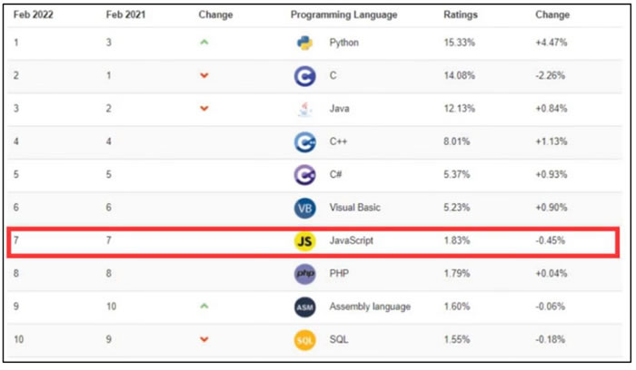
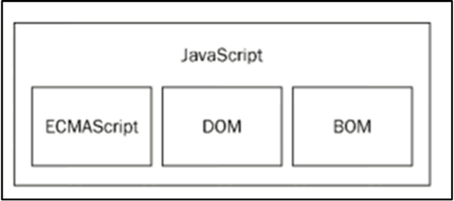

首页 > 编程笔记
JavaScript是什么
HTML、CSS 和 JavaScript 是 Web 前端开发的必备技术，开发者使用 HTML 和 CSS 构建一个静态网页之后，可以通过 JavaScript 使网页具有良好的交互性，包括表单验证、实时的内容更新、交互式的地图和响应浏览者的操作等。
在学习 JavaScript 之前，读者应先了解 JavaScript 是什么，它都有哪些特点等。
JavaScript 具有以下特点：
疫情期间，我们使用的健康码、行程码等都是小程序的应用。2020 年 9 月，健康码引擎第一行代码被国家博物馆收藏，同时被收藏的还有团队制作人员的签名。
程序员是一个普通的岗位，但是能参与到开发健康码这么有意义的活动中，非常有特殊意义。可以说平凡的岗位做出不平凡的成绩，向开发健康码团队的每一位程序员致敬！
除了以上几个前端的常见应用场景之外，JavaScript 还可以通过 Node.js 进行服务器端程序开发；通过 electron.js 进行桌面应用开发；通过 three.js 呈现交互式 3D 和 2D 图形；通过 Cocos2d、Unity3D、Babylon.js 等引擎开发游戏；通过 Hybrid 和 React-Native 开发移动端 App；通过 Ruff 进行嵌入式开发；通过鸿蒙系统的方舟开发框架进行鸿蒙系统应用程序开发。
TIOBE 编程社区是根据互联网上有经验的程序员、课程和第三方厂商的数量，并使用搜索引擎（如Google、Bing、Yahoo!）以及 Wikipedia、Amazon、YouTube 和 Baidu 统计出排名数据，反映出某种编程语言的热门程度。TIOBE 编程社区排行是编程语言受欢迎程度的指标，索引每月更新一次。
JavaScript 语言比较稳定在 top10 中，2022 年 2 月 TIOBE 发布的“编程语言排行榜”，如下图所示。
JavaScript 是最受开发者欢迎的编程语言之一，并逐渐成为全球网站使用最多的脚本语言。
1) ECMAScript：ECMA（European Computer Manufacturers Association，欧洲计算机制造商协会）在 1997 年制定了 ECMA-262 标准。该标准定义了一个名为 ECMAScript 的脚本语言，规定了脚本语言的规范，而 JavaScript 则是依照这个规范来实现的，最新版为 ECMAScript 2021。
2) DOM（Document Object Model，文档对象模型）：它提供访问和操作网页内容的方法和接口。
3) BOM（Browser Object Model，浏览器对象模型）：它提供与浏览器交互的方法和接口。
ECMAScript 与 Web 浏览器没有依赖关系，Web 浏览器只是 ECMAScript 实现可能的宿主环境之一。宿主环境不仅提供基本的 ECMAScript 实现，同时也会提供该语言的扩展，以便语言与环境之间对接交互。
例如，小程序中的 JavaScript 由 ECMAScript、小程序框架、小程序 API 组成，和浏览器中的 JavaScript 相比，小程序中的 JavaScript 没有 BOM 和 DOM 对象。
在学习 JavaScript 之前，读者应先了解 JavaScript 是什么，它都有哪些特点等。
JavaScript是什么
JavaScript 是一种解释型的脚本语言，它诞生于 1995 年，最初是由 Netscape 公司的布兰登·艾奇（Brendan Eich）设计并命名为 LiveScript，在 Netscape 与 Sun 合作之后被命名为 JavaScript。JavaScript 具有以下特点：
- JavaScript 是一种解释型的脚本语言。JavaScript 程序在运行过程中由浏览器中的 JavaScript 引擎逐行解释执行，无须编译。
- JavaScript 是一种基于对象的脚本语言，它不仅可以创建对象，也能使用现有的对象。
- JavaScript 可跨平台，不依赖于操作系统，仅需要浏览器的支持。JavaScript 程序在编写后可以在任意安装有浏览器的机器上运行。目前，JavaScript 已被绝大多数的浏览器所支持。
JavaScript应用场景
1、表单校验
JavaScript 可以在 HTML 表单数据发往服务器前验证其正确性。例如，验证表单数据是否为空，验证输入是否是一个正确的 Email 地址等。2、网页特效
JavaScript 可以使网页与用户之间进行动态交互，提高用户体验，从而让用户记忆犹新。例如，网页轮播图、网页放大镜、购票选座和数据可视化等。3、数据交互
JavaScript 可以通过 Ajax 技术与服务器交换数据，在不刷新整个页面的情况下，产生局部刷新效果，例如疫情数据的实时获取更新。4、小程序开发
小程序即用即走、无须下载的特性为用户提供了更便捷的使用方式。JavaScript 是开发小程序必要的编程语言，例如，开发微信小程序和支付宝小程序等。疫情期间，我们使用的健康码、行程码等都是小程序的应用。2020 年 9 月，健康码引擎第一行代码被国家博物馆收藏，同时被收藏的还有团队制作人员的签名。
程序员是一个普通的岗位，但是能参与到开发健康码这么有意义的活动中，非常有特殊意义。可以说平凡的岗位做出不平凡的成绩，向开发健康码团队的每一位程序员致敬！
除了以上几个前端的常见应用场景之外，JavaScript 还可以通过 Node.js 进行服务器端程序开发；通过 electron.js 进行桌面应用开发；通过 three.js 呈现交互式 3D 和 2D 图形；通过 Cocos2d、Unity3D、Babylon.js 等引擎开发游戏；通过 Hybrid 和 React-Native 开发移动端 App；通过 Ruff 进行嵌入式开发；通过鸿蒙系统的方舟开发框架进行鸿蒙系统应用程序开发。
JavaScript发展趋势
全球最大开发者社区 GitHub 发布的 2021 年度 Octoverse 报告中，展示了自 2014 年至 2021 年最受开发者们欢迎的编程语言 top10 热度走势。在 JavaScript、Python、Java、TypeScript、C#、PHP、C++、Ruby、C 这 9 种编程语言中，JavaScript 连续多年稳居最受欢迎榜首的位置。TIOBE 编程社区是根据互联网上有经验的程序员、课程和第三方厂商的数量，并使用搜索引擎（如Google、Bing、Yahoo!）以及 Wikipedia、Amazon、YouTube 和 Baidu 统计出排名数据，反映出某种编程语言的热门程度。TIOBE 编程社区排行是编程语言受欢迎程度的指标，索引每月更新一次。
JavaScript 语言比较稳定在 top10 中，2022 年 2 月 TIOBE 发布的“编程语言排行榜”，如下图所示。

图：2022年2月TIOBE发布的“编程语言排行榜”
图：2022年2月TIOBE发布的“编程语言排行榜”
JavaScript 是最受开发者欢迎的编程语言之一，并逐渐成为全球网站使用最多的脚本语言。
JavaScript组成部分
浏览器中的 JavaScript 由以下三个不同的部分组成，如下图所示。

1) ECMAScript：ECMA（European Computer Manufacturers Association，欧洲计算机制造商协会）在 1997 年制定了 ECMA-262 标准。该标准定义了一个名为 ECMAScript 的脚本语言，规定了脚本语言的规范，而 JavaScript 则是依照这个规范来实现的，最新版为 ECMAScript 2021。
2) DOM（Document Object Model，文档对象模型）：它提供访问和操作网页内容的方法和接口。
3) BOM（Browser Object Model，浏览器对象模型）：它提供与浏览器交互的方法和接口。
ECMAScript 与 Web 浏览器没有依赖关系，Web 浏览器只是 ECMAScript 实现可能的宿主环境之一。宿主环境不仅提供基本的 ECMAScript 实现，同时也会提供该语言的扩展，以便语言与环境之间对接交互。
例如，小程序中的 JavaScript 由 ECMAScript、小程序框架、小程序 API 组成，和浏览器中的 JavaScript 相比，小程序中的 JavaScript 没有 BOM 和 DOM 对象。
关注公众号「站长严长生」，在手机上阅读所有教程，随时随地都能学习。内含一款搜索神器，免费下载全网书籍和视频。

微信扫码关注公众号